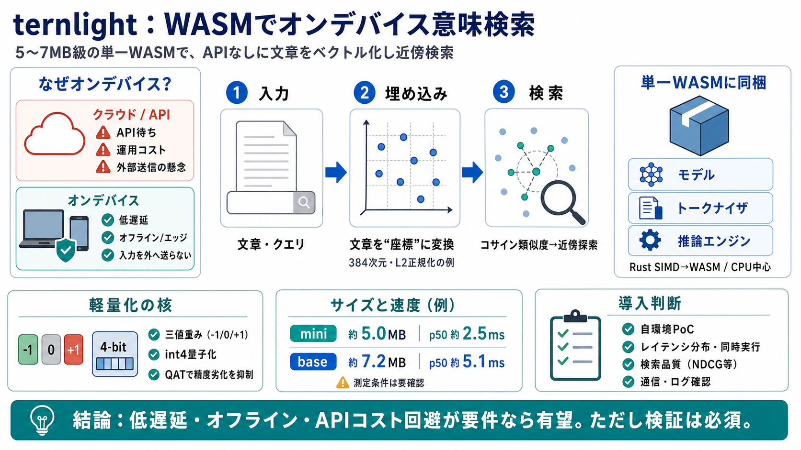

BitNet b1.58: Ternary Quantization for LLMs
# BitNet b1.58: Ternary Quantization for LLMs. * BitNet b1.58 is a quantization-aware training approach that discretizes…

オンデバイス埋め込み
5〜7MB級のWebAssemblyで、ネットワークAPIなしに意味ベクトル（semantic embedding / 意味埋め込み）を計算し、近傍検索まで実現する軽量エンジンです。
なぜ「オンデバイス」が要る？
埋め込み検索は有効ですが、クラウドAPIではレイテンシ・コスト・運用が重く、さらに入力が外部へ出る懸念があります。 ternlightはこの制約を、単一WASMバンドルで完結する設計で緩めます。
ネットワーク往復で検索-as-you-type が遅れる／依存や監視のコストが増える。
クエリや文書を外へ送らず、オフライン/エッジで意味検索を動かす。
埋め込み＝「文章の座標」
埋め込み（embedding / 埋め込み）は文章やクエリを数値ベクトルに変換し、コサイン類似度や近傍探索で「意味が近い文」を見つけます。
テキストをそのまま投入。
（例）384次元・L2正規化。
近傍探索で関連文書を取得。
単一WASMで全部入り
ternlightは「モデル＋トークナイザ＋推論エンジン」を1つのWebAssemblyバンドルとして配布し、ポストインストールや追加取得なしで動作することを狙います。
推論と前処理が同梱され、環境依存を抑える設計。
GPUなしでも高速化を狙う（SIMD対応エンジン）。
できること
入力→埋め込み生成→コサイン類似度→近傍探索、までをフロント/サーバー（エッジ含む）でAPIなしに実行できます。
（例）384次元、L2正規化。
意味の近さを数値化。
similar関数等で取得。
サイズと速度
配布サイズはgz圧縮WASMで約5.0MB（mini）/7.2MB（base）、1埋め込みあたりp50レイテンシは約2.5ms（mini）/5.1ms（base）とされています。
gz WASM：約5.0MB / p50：約2.5ms（1埋め込み）。
gz WASM：約7.2MB / p50：約5.1ms（1埋め込み）。
軽量化の核
重みを-1/0/+1の三値にし、さらにint4量子化（embedding量子化）でサイズと速度を両立します。 QAT（量子化-aware training）を通じて、素朴な量子化より精度劣化を抑える方針です。
加算/減算中心で効率化。
表現を4bitへ圧縮。
量子化前提で学習。
品質指標（直感）
READMEでは、教師モデル（all-MiniLM-L6）へのSpearman相関（0.820/0.844）と、検索品質SciFact NDCG@10（0.439/0.465）が提示されています。 指標の測定条件は要確認です。
教師のランキングとどれだけ相関するか（0〜1で高いほど良い）。
関連度の高い文が上位に来るほど高得点。
「良さそう」から「使える」へ
効率や品質は示唆されていますが、CPU/ブラウザ/スレッド、ウォームアップ、同時実行、メモリ使用量などの実条件が不明な点があります。 自環境でベンチ（レイテンシ/スループット/品質）と「外部送信がない」確認を推奨します。
p50だけでなく分布・同時実行。
あなたのデータで再計測。
実装全体での挙動を検証。
評価：有望だが検証は必須
ternlightの強みは「数MB級」「WASM完結」「CPUのみ」「推論＋トークナイズ同梱」「速度ベンチ提示」を一体で進めている点です。 ただし測定条件・汎化・メモリ/同時実行・セキュリティは、公式情報と自前検証で埋める必要があります。
特に「低遅延」「オフライン」「APIコスト回避」が要件なら有望。
自環境PoCで速度・品質・データ外部送信を確認。
# BitNet b1.58: Ternary Quantization for LLMs. * BitNet b1.58 is a quantization-aware training approach that discretizes…
Cover image for Traditional Quantization vs 1.58-Bit Ternary Models: A Practical Comparison. # Traditional Quantization …
# BitNet b1.58 2B4T: The Dawn of Ternary Intelligence. ## In a world dominated by massive, power-hungry models, BitNet i…
Recently proposed methods for 1-bit and 1.58-bit quantization aware training investigate the performance and behavior of…
In this work, we introduce a 1-bit LLM variant, namely BitNet b1.58, in which every single parameter (or weight) of the …